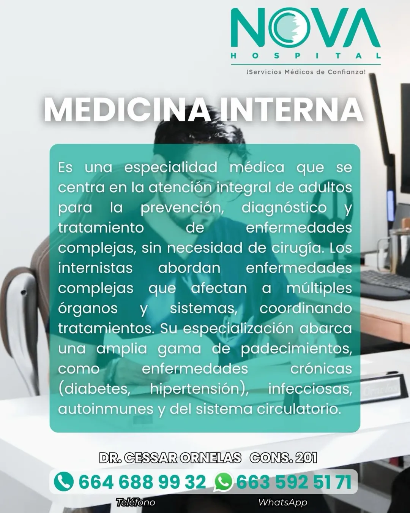

Medicina Interna
Atención integral del adulto: diabetes, hipertensión, enfermedades infecciosas, autoinmunes y circulatorias, sin cirugía.
Agendar valoraciónUrgencias, quirófano, hospitalización y valoración por especialistas en un solo lugar. Laboratorio, rayos X y banco de sangre disponibles día y noche.




Valoración por especialistas, consulta médica, quirófano y hospitalización en un mismo lugar en Tijuana.
Atención integral del adulto: diabetes, hipertensión, enfermedades infecciosas, autoinmunes y circulatorias, sin cirugía.
Agendar valoraciónDiagnóstico y tratamiento de migraña, vértigo, epilepsia, problemas de memoria y trastornos del sueño.
Agendar valoraciónCirujanos oncólogos para el tratamiento quirúrgico del cáncer con quirófano y hospitalización 24 horas.
Agendar valoraciónPresupuesto hospitalario, requisitos de ingreso, certificado de nacimiento y gastos médicos mayores.
Agendar valoraciónSiempre abierto. Valoración inmediata por médicos y especialistas a cualquier hora, todos los días.
Agendar valoraciónQuirófanos equipados y habitaciones para tu recuperación con vigilancia médica continua.
Agendar valoraciónLaboratorio, imagen y banco de sangre dentro del hospital para decisiones médicas rápidas y seguras.
Recibe toda la información para el nacimiento de tu bebé en Hospital Nova.
Sí. Hospital Nova está siempre abierto, 24 horas los 7 días de la semana, con consulta médica, quirófano, hospitalización y valoración por especialistas.
Puedes llamar al 664 688 99 32, escribirnos por WhatsApp o llenar el formulario de contacto. Te respondemos para confirmar día y hora.
Sí. Contamos con servicios de diagnóstico 24/7: laboratorio clínico NovaLab, estudios de imagen y rayos X con Intedia y banco de sangre Haima.
Sí. Te compartimos presupuesto hospitalario, requisitos de ingreso, recomendaciones, trámite de certificado de nacimiento y opciones con gastos médicos mayores.
Sí. Recibimos pacientes de San Diego y del sur de California que buscan atención de especialidad en Tijuana. Escríbenos y te orientamos en español o inglés.
Información médica clara, escrita para pacientes y sus familias.
Diferencias entre parto natural y cesárea, cuándo se recomienda cada uno, recuperación y qué preguntar al hospital antes del nacimiento de tu bebé.
Leer artículoEl internista es el especialista del adulto que coordina el diagnóstico y tratamiento de enfermedades complejas que afectan a varios órganos.
Leer artículoLa mayoría de los dolores de cabeza no son graves, pero hay señales que requieren valoración neurológica inmediata. Aprende a reconocerlas.
Leer artículo